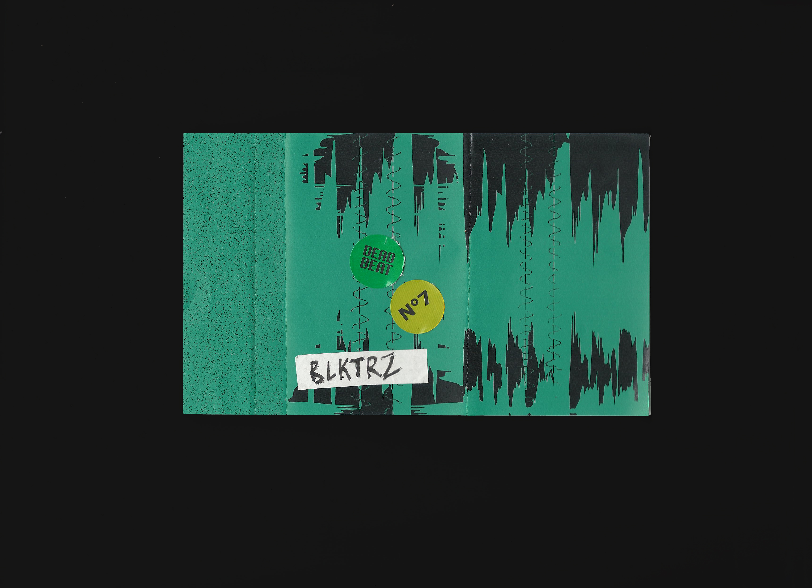
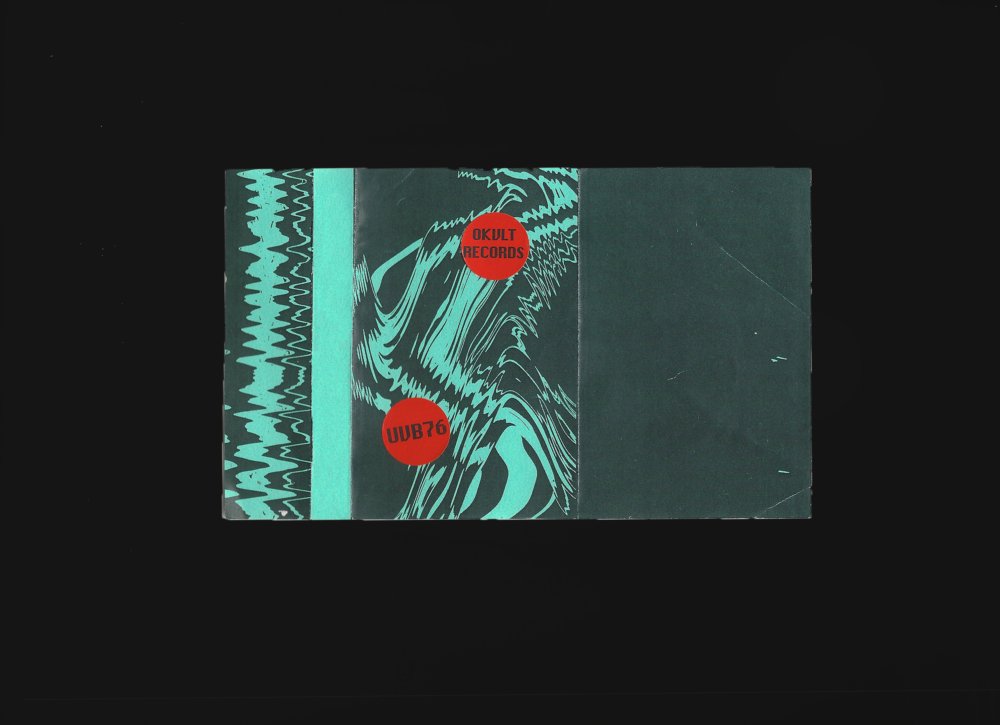
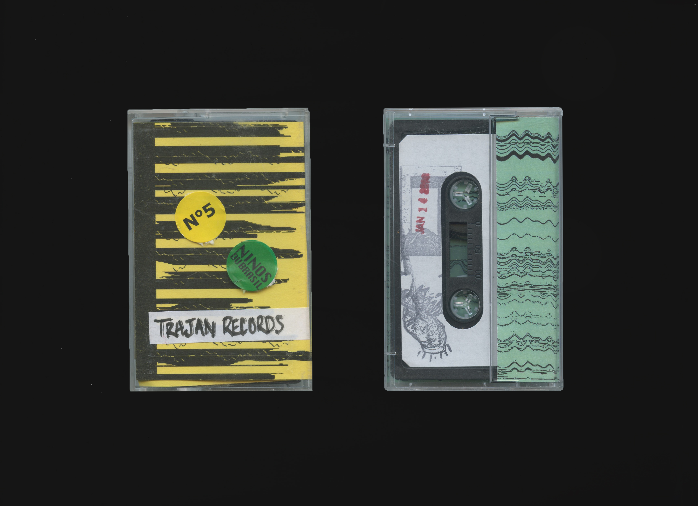
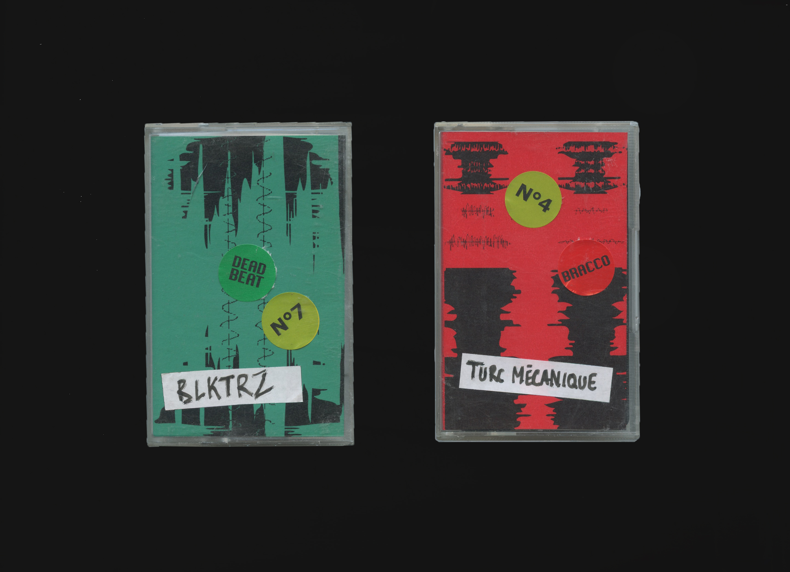
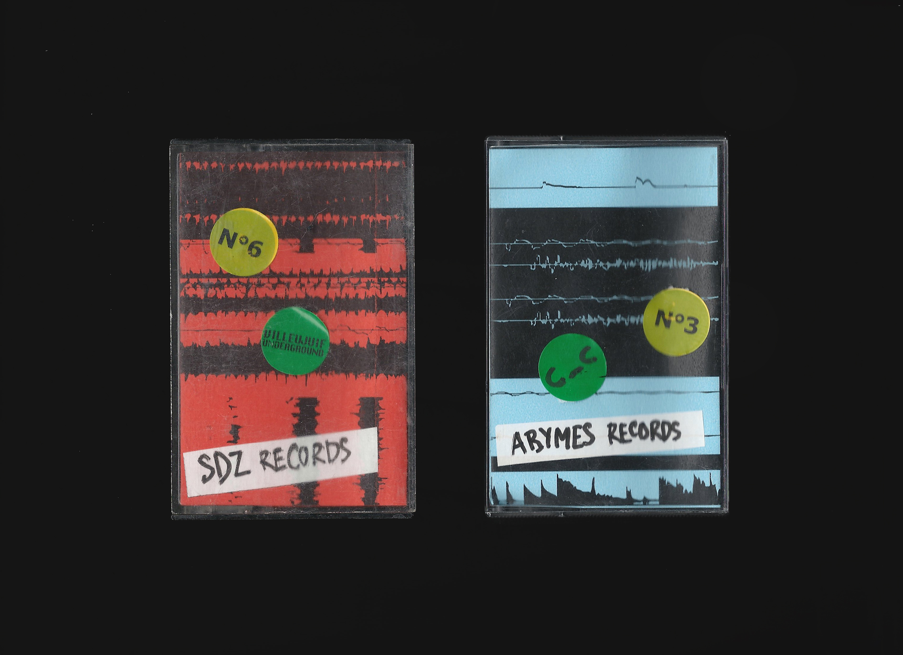

PROJET DE SYNTHÈSE
Pour mon projet professionnel de fin de BTS j’ai imaginé
une nouvelle identité visuelle pour l'évènement de la journée de la cassette.
Cette journée a pour but de remettre en valeur les qualités liées à la cassette. J’ai orienté mes recherches vers la représentation visuelle du son. La qualité sonore de la cassette peut parfois réserver des surprises, des sons se déforment, du grain ou de nouveaux bruits apparaissent, j'ai souhaité faire référence à ce phénomène par la représentation visuelle de la distorsion.
Affiche animée avec son / Bannière Facebook / Collection de cassettes

MERCHANDISING
Réalisation d'une collection de cassettes mises en vente sur le stand de merchandising. Chaque label vend une cassette audio, je me suis donc inspirée de leurs genres musicaux pour créer une identité unique à chacun. Utilisation de la représentation visuelle des ondes sonores. J'ai souhaité mettre en avant l'aspect accessible et fait main de la cassette par l’utilisation de pastilles déclinables et d’écritures manuscrites.
    